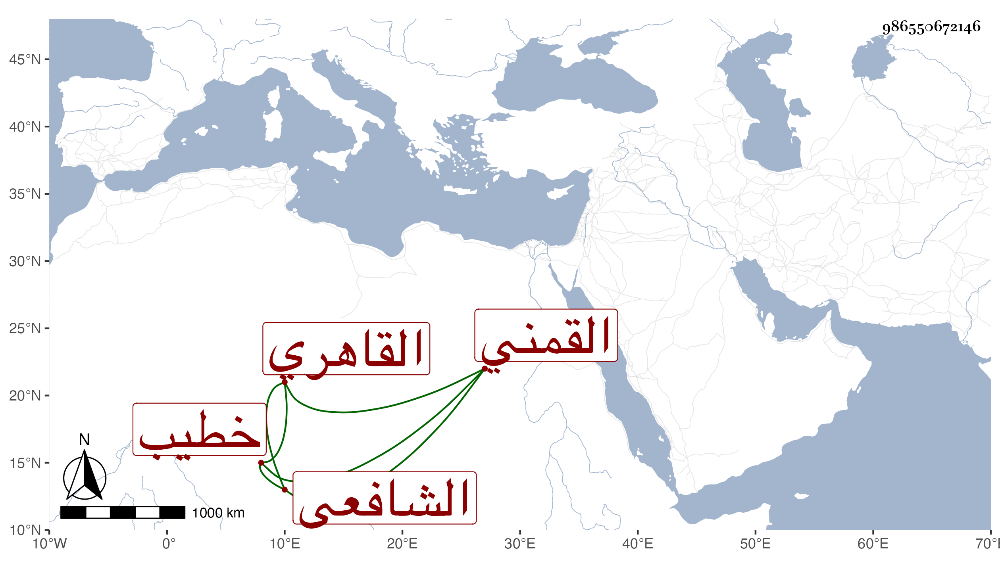

0902Sakhawi.DawLamic.ITO20230111-ara1.EIS1600.986550672146
Biography ID: 986550672146
471
عثمان بن عمر بن محمد القمني ثم القاهري خطيب جامع صاروجا الشافعي . تلا للسبع رفيقا للجمال الزيتوني على عثمان المنوفي وأذن له في الإقراء واشتغل في غيره يسيرا وتكسب بالشهادة وقتا وجلس لتأديب الأبناء فانتفع به جماعة . وممن قرأ عنده الجد أبو الأم والخال وآخرون بعضهم في الأحياء وخطب بجامع ناصر الدين أخي صاروجا ، وكان خيرا ثقة صارما حج وجاور غير مرة وصاهره الشمس ابن الخص على ابنته بركة فأولدها إبراهيم وإخوته وكذازوج ابنه الشهاب الماضي أحمد بالوالدة ولم يلبث أن مات الابن فصبر ومات بعد ذلك بعد الثلاثين أو قبلها رحمه الله وإيانا .
